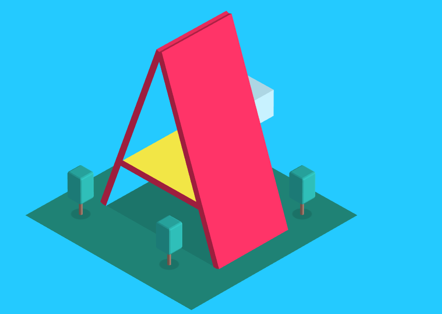

To Do Today:
-
AR History
Become familiar with the history of augmented reality to where we are today
-
AR Libraries
Become familiar with some of the technologies/software responsible for building augmented reality
-
Build/play
Build a simple, browser-based augmented reality webpage
What is Augmented Reality?
Augmented reality (AR) is a live direct or indirect view of a physical, real-world environment whose elements are augmented (or supplemented) by computer-generated sensory input such as sound, video, graphics or GPS data
Ikea Place App
ar.js - gaming
AR in education
ar.js - created by Jerome Etienne in early 2017
AR.js : The Mission - Bringing AR to the Web
- runs very fast, supports Android, iOS and Windows phones
- pure web solution / no installation required
- Open Source
- Works on any modern browser with WebGL & WebRTC
- full javascript
- based on three.js + jsartoolkit5
June 2017 - Apple created ARKit
- markerless tracking
- ability to do HIT testing on the real world
- available on monocular camera
monocular camera - Hololens by Microsoft
August 2017 - Google replied with ARCore
Google's ARCore vs. Apple's ARKit
- Now both major vendors had good AR support
- Apple no longer had a monopoly on AR
- Both competing with each other is good news for the AR world
However, both ARKit and ARCore were native implementations for their respective phones and not something you can easily reach from the web.
Google exposed AR on the Web via:
WebARonARCore
WebARonARKit
As a response, ar.js has evolved
- ar.js is made available to the A-Frame API
- ar.js is also made available via babylon.js
- It supports ARcore and ARkit
- On ARcore, AR.js will use ARcore tracking
- On ARkit, AR.js will use ARkit tracking
- On a normal phone, AR.js will use pure-web tracking
This means you have one source for all platforms
A-Frame
https://aframe.io/examples/showcase/snowglobe/
A-Frame is built on top of WebGL, Three.js and custom elements.
tracking
-
AR markers -
Geo Tracking -

Face Tracking
- Colour tracking
- Object tracking
Intro to ar.js and A-frame
Include following scripts:
<script src="https://aframe.io/releases/0.7.1/aframe.min.js"></script>
<script src="https://rawgit.com/jeromeetienne/ar.js/master/aframe/build/aframe-ar.js"></script>
<script>THREEx.ArToolkitContext.baseURL = 'https://rawgit.com/jeromeetienne/ar.js/master/three.js/'</script>
Step 1 - Add a scene after the <body> tag
<a-scene embedded artoolkit='sourceType: webcam;'>
</a-scene>
Step 2 - Add a marker-camera
<a-scene embedded artoolkit='sourceType: webcam;'>
<a-marker-camera preset='hiro'></a-marker-camera>
</a-scene>
Step 3 - Add a box object
<a-scene embedded artoolkit='sourceType: webcam;'>
<a-box position='0 0.5 0' ></a-box>
<a-marker-camera preset='hiro'></a-marker-camera>
</a-scene>

Can I change the colour?
Can I change the opacity?
In-class exercise 13
Try adding these objects in your scene:
- <a-sphere position="0 0.5 0" radius=".25" color="#EF2D5E"></a-sphere>
- <a-cylinder position="1 0.75 -3" radius="0.5" height="1.5" color="#FFC65D"></a-cylinder>
- <a-plane position="0 0 -4" rotation="-90 0 0" width="4" height="4" color="#7BC8A4"></a-plane>
- <a-text value="hello world"></a-text>
- <a-image src="https://upload.wikimedia.org/wikipedia/commons/thumb/4/47/PNG_transparency_demonstration_1.png/280px-PNG_transparency_demonstration_1.png"></a-image>
Try tweaking its attributes such as: position, radius, etc. (or add your own image)
Take a screenshot of your creation and submit it on blackboard
Submit
in-class exercise 11 + break
(5 mins) + (15 mins)
* * *
More Stuff
{kind=link}
Possible Application #1
Possible Application #2
webxr.io
Watch this 6 minute video about what else ar.js can do through this GUI web playground
Play with webxr.io for the next 15 minutes
Paper Programs
Summary:
Augmented reality is still very new and has yet to peak. However, you've learned some of the applications that can be applied to such technology and how to build a basic A.R. components using A-frame.
References
- https://www.youtube.com/watch?v=NBrM7YVznzk
- https://www.trekk.com/insights/augmented-or-virtual-how-do-you-your-reality
- https://www.youtube.com/watch?v=VKPyuQsGYeE
- https://www.youtube.com/watch?v=_7FRNqhKf7I
- https://www.youtube.com/watch?v=wVOESt-TpSA
- https://www.digi-capital.com/news/2016/07/virtual-augmented-and-mixed-reality-are-the-4th-wave/
- https://en.wikipedia.org/wiki/Augmented_reality
- https://www.youtube.com/watch?v=ZYZYnY-uu10
- https://www.youtube.com/watch?v=NyZ_dAlNBOI